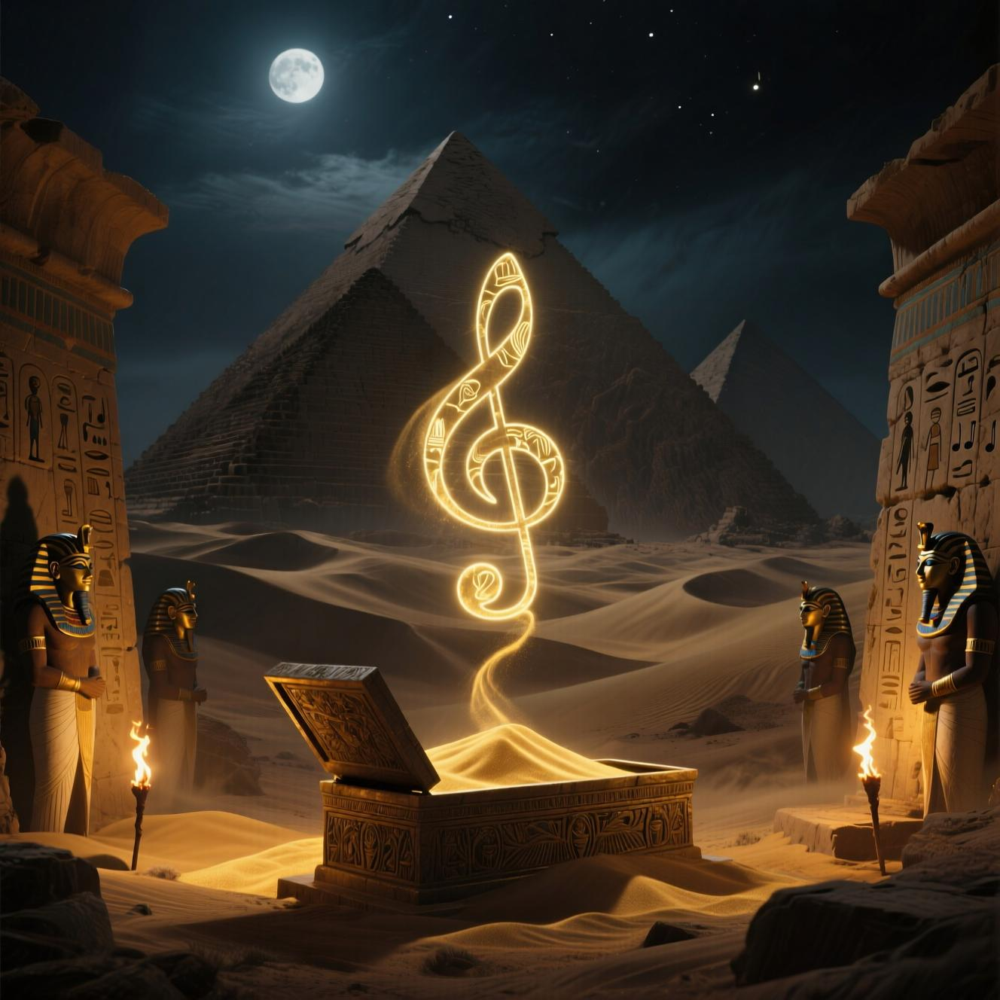

در دنیای امروز، یک پست معمولی دیگر کافی نیست. برای جذب مخاطب، به **ریلزهای خیرهکننده** نیاز دارید. در این راهنما، ۵ قدم طلایی برای ساخت ویدیوهای جذاب اینستاگرام را با شما به اشتراک میگذاریم.
۱. ایدهپردازی قوی
شروع با یک ایده جذاب: "قبل و بعد"، "رازهای پشت صحنه"، "چالشهای جالب"، "آموزش سریع". ما در داش اسمال، از هوش مصنوعی برای تولید صدها ایده استفاده میکنیم.
۲. طراحی بصری حرفهای
استفاده از انیمیشن، تغییر رنگ، متن متحرک و ترکیب تصاویر. ما از ابزارهای پیشرفته برای طراحی گرافیک ویدیو استفاده میکنیم.
۳. موسیقی و صدا
موسیقی مناسب، حس و حال ویدیو را تغییر میدهد. ما موسیقی متن سفارشی و بدون حق تکثیر میسازیم.
۴. ویرایش هوشمند
سرعت، ترنزیشن، زوم و افکتهای بصری — همه اینها باید با هدف جذب مخاطب ترکیب شوند.
۵. بهینهسازی برای الگوریتم
استفاده از هشتگهای مناسب، تایتل جذاب و زمان انتشار هوشمند.
در داش اسمال، ما تمام این مراحل را با تیم حرفهای و هوش مصنوعی انجام میدهیم تا شما یک ویدیوی ویروسی داشته باشید.